5. Menus¶
Within Cibos, Menus are built from Items (Batch Recipes) and Headings. Menus also support Packages, discrete units of a specific Batch Recipe that are offered at a set price. You can select from multiple completely independent Menus (created in the Menu Management area under Collaboration) using the drop-down box in the top-left corner.
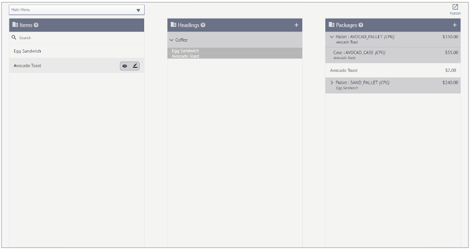
5.1. Items¶
Menu Items are pulled directly from the Batch Recipes created on the Recipes page. Use the Search function to narrow down a long list of Items. NOTE: To create a new Item, it must first be built from Raw Materials into a Batch Recipe. Items cannot be created on the Menu page.
Edit Menu Items
Hover over the Item of interest and click the Pencil (edit) icon.
In the Edit Item window, edit the following information:
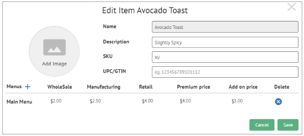
Name – Must change the name on Batch Recipe itself to change the Item Name
Description – The Description is displayed in the Menu, so ensure it accurately describes the Item
SKU – Choose a stock keeping unit (SKU) for the Item
UPC/GTIN – if you have a UPC/GTIN number for your Item, enter it here
Click Add Image to add an image of the Menu Item.
At the bottom, add the Item to a new Menu by clicking the Plus Icon. Add or Edit pricing information to suit your needs.
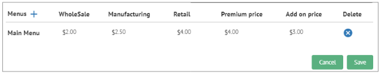
Click Save when you’ve finished making changes.
5.2. Headings¶
Headings are used to create separation in a Menu, allowing different types of Items or logical groupings to be created.
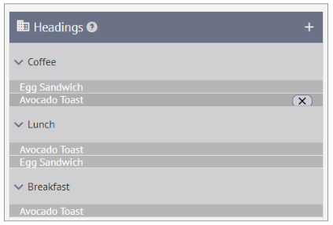Create a New Heading
Click the Plus icon next to the Headings title.
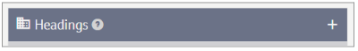
On the Add Heading form, choose a Name and a Description for the Heading. Add an Image if desired. Then click Save.
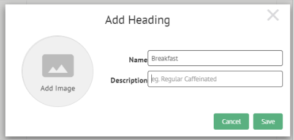
Add a Divider
Hover over one of the Headings and click the Plus icon to add a new Divider.
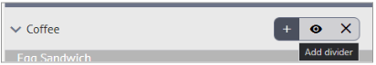
On the Add Divider form, enter the Divider Name and click Save
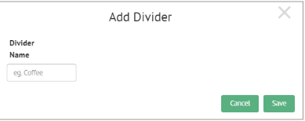
This divider can be replaced with another Item if you are having issues dragging and dropping Items without an error. Create the divider and then drag and drop the Item onto the divider.
5.3. Packages¶
Packages are discrete units of a specific Batch Recipe that are offered at a set price. They can be offered as Consumer Packaged Goods or Catering Packages.
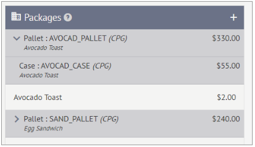How to Create a Package: Consumer Package Goods
Click the Plus icon next to the Packages title
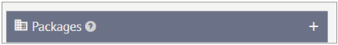In the New Package Type window, select Catering Packages and click Next.
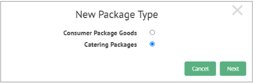On the Edit Catering Package page, enter the following information:
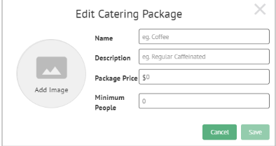
Name
Description
Package Price
Minimum People
Then click Add and Save.
5.4. Publishing a Menu¶
Once all of the Items, Headings, and Packages are created on the Menu page, you can Publish the Menu. Click the Publish icon in the top-right corner to look at a preview of the Menu.
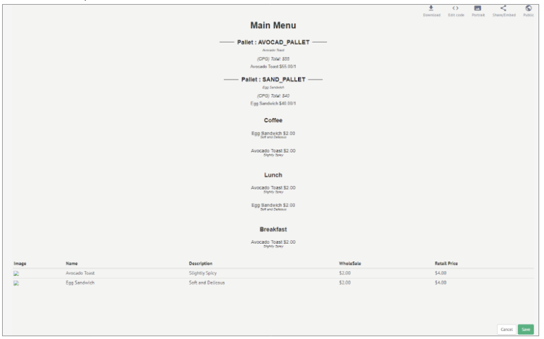Menu Options
There are five options available on the Publish Menu page:
Download – Click to Download the Menu
Edit Code – Make changes to the HTML and inline CSS of the Menu
Landscape/Portrait Toggle
Share/Embed
Public
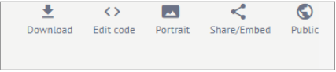